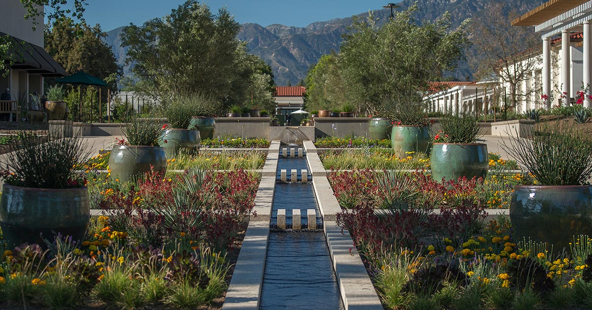
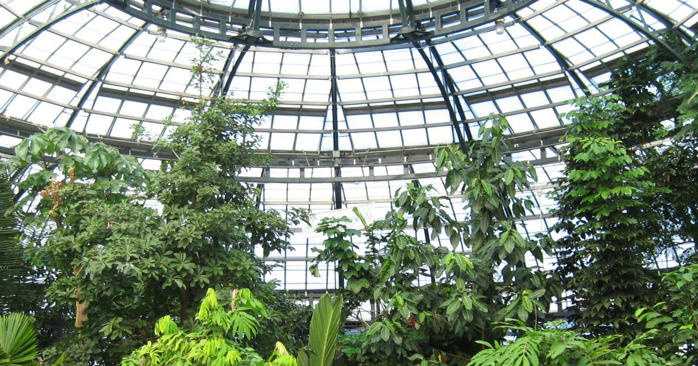
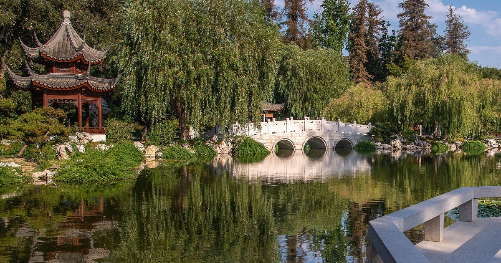

California Garden
The California Garden is a collection of plants native to California that covers 6.5 acres. This garden shows the local botany of
our state and the Mediterranean climate. This is the first garden you see upon entering the Huntington
Botanical Garden and serves as a beautiful yet calm introduction to the whole garden. You can see many drought-tolerant plants and many warm colors all around.

Conservatory Greenhouse
The Rose Hills Foundation Conservatory contains living plants that exhibits
a tropical rainforest, a cloud forest and a carnivorous plant bog. Most of the exhibitions
are interactable and contains information about specific plants. The Conservatory feels alive and you
can feels a sense of atmosphere shift that the plants thrive in.

Chinese Garden
The Chinese Garden or specifically called the Liu Fang Yuan (Garden of Flowing Fragrance) is one of the most popular exhibitions in the Botanical Garden. Filled with many Chinese Native plants surrounded by
Chinese architecture, entering this exhibition feels like you are transported to a
whole new place. A big lake filled with decoration fill the exhibition in the center.